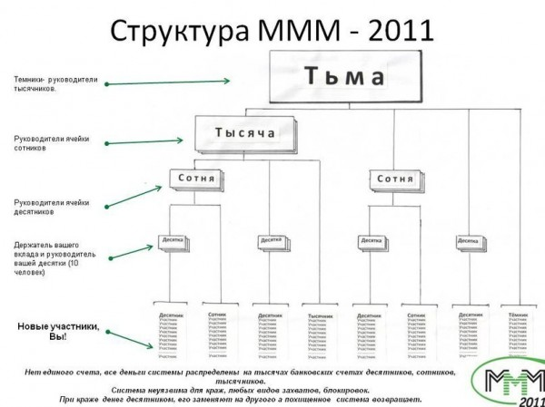

Идея вложиться в МММ у меня появилась в начале этого года. Считая себя взрослым и трезвомыслящим человеком идею МММ, как оппозицию действующей банковской системе я, конечно, не рассматривал. Не люблю слово «инвестиции», применительно к нескольким десяткам тысяч рублей, но вложения в МММ могли быть банальной высокорисковой сверхдоходной инвестицией.
Я даже зарегистрировался на сайте. Моим десятником стал наш земляк, Алексей Крылышкин, который зарабатывает всякими непонятными сео-шмео в интернете, а уже с полгода живёт в Таиланде. Интерфейс кабинета МММ, кстати, не просто ужасен. Лучше бы его не было вовсе.

По моим прикидкам пирамида должна была просуществовать ещё минимум до июня, а максимум до августа. Примерно в начале февраля у меня были планы вложить в пирамиду 50 000 рублей. Месячная ставка тогда равнялась 40%. 20 000 рублей — неплохая прибавка к зарплате программиста в небольшой конторе. Таким образом, планировалось, что на начало мая я уже буду в плюсе.
Стратегия моя состояла в том, чтобы вложить деньги единожды и ни при каких условиях не доливаться. Проблема тех кто пострадал больше всего именно в жадности. Единожды вложившись нужно было просто забирать ежемесячный процент.
Алексей мне писал пару раз письма (деньги предлагалось перечислить на его карту в банке). Но денег я так и зажал.
Отличие этой пирамиды от прежних было в том, что деньги были как бы децентрализованы. Не было никаких обязательств в юридическом смысле. Деньги гонялись по картам участников, физических лиц. Участники перечисляли их десятникам, десятники сотниками и т.д.

Как видно, пирамида продержалась до июня. Не факт, конечно, что у меня получилось бы заработать, ведь у разных частей пирамиды проблемы наступили в разное время, да и игрового момента здесь не очень много, поэтому факт зажимания денег себе в упрёк не ставлю.
Сейчас, когда пирамида, вроде как упала на бок, понятно, что заработали в конечном счёте на пирамиде те, кто раньше пришёл и не доливался, и, собственно темники, стотысячники, десятитысячники, может быть сотники. Пострадали, на мой взгляд, больше всех — предпоследняя ступень пирамиды — десятники. Десятники — с одной стороны, это те люди, которые наверняка вложили кучу своих денег, с другой, именно через десятников по умолчанию проходили все вклады и именно они ближе всего, в том числе физически, к глупым гражданам.
На форумах и в блогах сегодня глупые, загнанные в угол граждане так и пишут «крайне рекомендуется взяв знакомого кредитного коллектора, сотрудника органов (или пару знакомых лысых парней с битами, чисто так, для постоять рядом), набигать на десятника/сотника (благо, их телефоны/адреса известны), лично которому вы переводили вклады и спрашивать: "где мои деньги?"».
Сложившаяся ситуация напомнила недавнюю раздачу денег основателем социальной сети «ВКонтакте» Павлом Дуровым. Павел выбрасывал из окна своего офиса пятитысячные купюры, народ внизу бил друг друга, а народ «ВКонтакте» собирал лайки недоверия Павлу лично и выступал с осуждением. Мол нельзя делать так, чтобы люди показывали свою сущность.
Когда в голове мозгов нет, тогда только и остаётся, что в своих проблемах обвинять десятника, Дурова или кого повыше, а шальные деньги ума не прибавят точно.
Снимаю бейсболку перед платиновым троллем Сергеем Мавроди. Видит Кудрин, для финансового образования россиян Мавроди сделал столько, сколько не в силах сделать и десяток министров образования.
Как гласит английская пословица „penny saved is a penny earned“. Вот именно так я заработал на МММ.